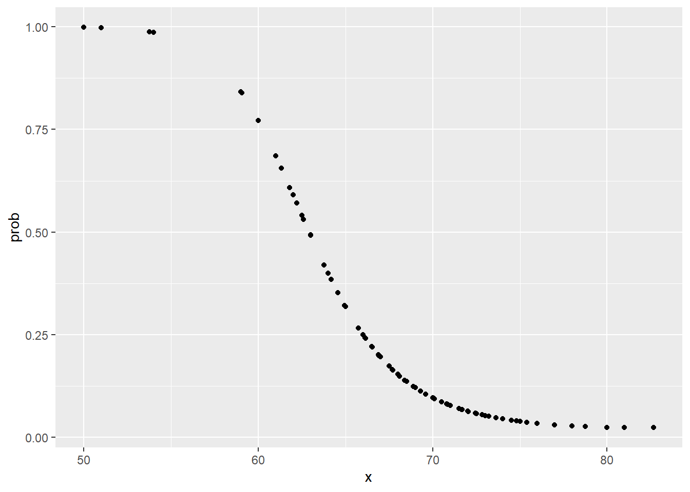
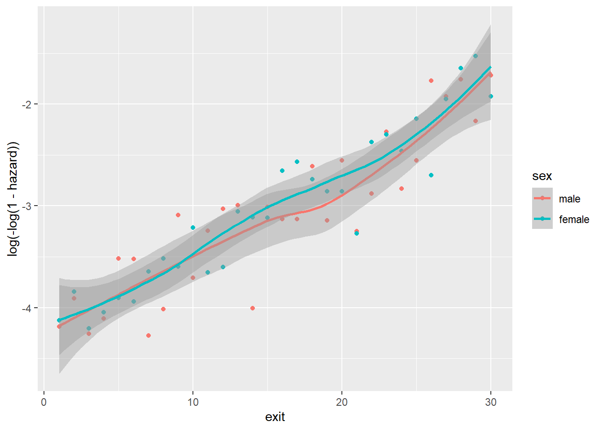

Chapter 33 SVM
33.1 Introduction
支持向量机（Support Vector Machine, SVM）是一类按监督学习（supervised learning）方式对数据进行二元分类的广义线性分类器（generalized linear classifier），其决策边界是对学习样本求解的最大边距超平面（maximum-margin hyperplane）
33.2 Introduction
逻辑斯蒂回归，它被用来预测一个观测属于某个响应变量分类的概率—— 我们称之为分类问题。逻辑斯蒂回归只是分类方法的开始，还可以使用很多其他方法改善预测 质量。
两种非线性技术：K最近邻（KNN）与支持向量机（SVM）。这两种技术要比我们之前讨论的那些技术复杂一些，因为放弃了线性假设. 也就是说，不再必须使用特征的线性组合来定义决策边界。
这样不一定能得到更好的预测结果，而且解释模型也会有一点问题，计算效率也更低。正确使用这些技术时，可以作为其他 技术和工具的强有力的补充
33.2.1 Perceptron
感知器模型
我们在一个平台上有很多的男孩女孩，感知机的模型就是尝试找到一条直线，能够把所有的男孩和女孩隔离开。放到三维空间或者更高维的空间，感知机的模型就是尝试找到一个超平面，能够把所有的二元类别隔离开。使用感知机一个最大的前提，就是数据是线性可分的。这严重限制了感知机的使用场景。它的分类竞争对手在面对不可分的情况时，比如支持向量机可以通过核技巧来让数据在高维可分，神经网络可以通过激活函数和增加隐藏层来让数据可分。
用数学的语言来说，如果我们有m个样本，每个样本对应于n维特征和一个二元类别输出，如下：
\[ (x_1^{(0)}, x_2^{(0)}, ...x_n^{(0)}, y_0), (x_1^{(1)}, x_2^{(1)}, ...x_n^{(1)},y_1), ... (x_1^{(m)}, x_2^{(m)}, ...x_n^{(m)}, y_m) \]
我们的目标是找到这样一个超平面，即：
\[ \theta_0 + \theta_{1}x_1 + ... + \theta_{n}x_{n} = 0 \]
让其中一种类别的样本都满足 \[\theta_0 + \theta_{1}x_1 + ... + \theta_{n}x_{n} > 0\] ，让另一种类别的样本都满足\[\theta_0 + \theta_{1}x_1 + ... + \theta_{n}x_{n} < 0\]，从而得到线性可分。如果数据线性可分，这样的超平面一般都不是唯一的，也就是说感知机模型可以有多个解。
Figure 33.1: Perceptronmodel
即对于这个分离的超平面，我们定义为\(w^Tx + b = 0\)。在超平面\(w^Tx + b = 0\)上方的我们定义为𝑦=1 y = 1 ,在超平面\(w^Tx + b = 0\)下方的我们定义为𝑦=−1 y = − 1 。可以看出满足这个条件的超平面并不止一个。那么我们可能会尝试思考，这么多的可以分类的超平面，哪个是最好的呢？或者说哪个是泛化能力最强的呢?
感知机模型的损失函数优化，它的思想是让所有误分类的点(定义为M)到超平面的距离和最小，即最小化下式：
\[ \sum\limits_{x_i \in M}- y^{(i)}(w^Tx^{(i)} +b)\big / ||w||_2 \]
当𝑤和𝑏 成比例的增加，比如,当分子的𝑤和𝑏扩大N倍时，分母的L2范数也会扩大N倍。也就是说，分子和分母有固定的倍数关系。那么我们可以固定分子或者分母为1，然后求另一个即分子自己或者分母的倒数的最小化作为损失函数，这样可以简化我们的损失函数。在感知机模型中，我们采用的是保留分子，固定分母||𝑤||2=1,即最终感知机模型的损失函数为
\[ \sum\limits_{x_i \in M}- y^{(i)}(w^Tx^{(i)} +b) \]
33.2.2 函数间隔与几何间隔
在分离超平面固定为\[w^Tx + b = 0\]的时候，\(|w^Tx + b|\)表示点x到超平面的相对距离。通过观察\(w^Tx + b\)和y是否同号，我们判断分类是否正确，这里我们引入函数间隔的概念，定义函数间隔𝛾′ 为：
\[ \gamma^{'} = y(w^Tx + b) \]
它就是感知机模型里面的误分类点到超平面距离的分子。对于训练集中m个样本点对应的m个函数间隔的最小值，就是整个训练集的函数间隔。
函数间隔并不能正常反应点到超平面的距离，在感知机模型里我们也提到，当分子成比例的增长时，分母也是成倍增长。为了统一度量，我们需要对法向量𝑤加上约束条件，这样我们就得到了几何间隔𝛾,定义为
\[ \gamma = \frac{y(w^Tx + b)}{||w||_2} = \frac{\gamma^{'}}{||w||_2} \]
33.2.3 SVM支持向量
在感知机模型中，我们可以找到多个可以分类的超平面将数据分开，并且优化时希望所有的点都被准确分类。但是实际上离超平面很远的点已经被正确分类，它对超平面的位置没有影响。我们最关心是那些离超平面很近的点，这些点很容易被误分类。如果我们可以让离超平面比较近的点尽可能的远离超平面，最大化几何间隔，那么我们的分类效果会更好一些。SVM的思想起源正起于此。
如下图所示，分离超平面为\[w^Tx + b = 0\]，如果所有的样本不光可以被超平面分开，还和超平面保持一定的函数距离（下图函数距离为1），那么这样的分类超平面是比感知机的分类超平面优的。可以证明，这样的超平面只有一个。和超平面平行的保持一定的函数距离的这两个超平面对应的向量，我们定义为支持向量。
细实线就是最优线性分类器，它建立了上面提到的最大可能边际， 提高了一个新观测落入分类器正确一侧的概率。两条虚线对应着安全边际。如果支持向量发生移动，就会导致边际和决策范围发生改变。支持向量到超平面的距离为\[1/||w||_2\],两个支持向量之间的距离为\[2/||w||_2\]。
33.2.4 SVM模型目标函数与优化
SVM的模型是让所有点到超平面的距离大于一定的距离，也就是所有的分类点要在各自类别的支持向量两边。用数学式子表示为：
\[ max \;\; \gamma = \frac{y(w^Tx + b)}{||w||_2} \;\; s.t \;\; y_i(w^Tx_i + b) = \gamma^{'(i)} \geq \gamma^{'} (i =1,2,...m) \]
一般我们都取函数间隔γ′为1，这样我们的优化函数定义为：
\[ max \;\; \frac{1}{||w||_2} \;\; s.t \;\; y_i(w^Tx_i + b) \geq 1 (i =1,2,...m) \]
也就是说，我们要在约束条件 \[y_i(w^Tx_i + b) \geq 1 (i =1,2,...m)\] 下，最大化 \[\frac{1)}{||w||_2}\] 。可以看出，感知机是固定分母优化分子，而SVM是固定分子优化分母，同时加上了支持向量的限制。
由于\[\frac{1)}{||w||_2}\]的最大化等同于 \[\frac{1}{2}||w||_2^2\] (凸函数) 的最小化。这样SVM的优化函数等价于：
\[ min \;\; \frac{1}{2}||w||_2^2 \;\; s.t \;\; y_i(w^Tx_i + b) \geq 1 (i =1,2,...m) \]
根据凸优化理论，我们可以通过拉格朗日函数将我们的优化目标转化为无约束的优化函数，
\[ L(w,b,\alpha) = \frac{1}{2}||w||_2^2 - \sum\limits_{i=1}^{m}\alpha_i[y_i(w^Tx_i + b) - 1] \; 满足\alpha_i \geq 0 \]
最后一顿神仙操作后，对于任意支持向量 \[(x_x, y_s)\]，都有
\[ y_s(w^Tx_s+b) = y_s(\sum\limits_{i=1}^{m}\alpha_iy_ix_i^Tx_s+b) = 1 \]
假设我们有S个支持向量，则对应我们求出S个\[b^{*}\],理论上这些\[b^{*}\]都可以作为最终的结果， 但是我们一般采用一种更健壮的办法，即求出所有支持向量所对应的 \[b_s^{*}\]** ，然后将其平均值作为最后的结果**。(注意到对于严格线性可分的SVM，b的值是有唯一解的，也就是这里求出的所有$$b^{*}都是一样的)
33.2.5 线性可分SVM的算法过程
算法过程如下：
- 1) 构造约束优化问题
\[ \begin{array}{c} \underbrace{\min }_{\alpha} \frac{1}{2} \sum_{i=1}^{m} \sum_{j=1}^{m} \alpha_{i} \alpha_{j} y_{i} y_{j}\left(x_{i} \bullet x_{j}\right)-\sum_{i=1}^{m} \alpha_{i} \\ \text { s.t. } \sum_{i=1}^{m} \alpha_{i} y_{i}=0 \\ \alpha_{i} \geq 0 i=1,2, \ldots m \end{array} \]
- 2) 用SMO算法求出上式最小时对应的 \[\alpha\] 向量的值 \[\alpha^{*}\] 向量.
- 3) 计算 \[w^{*}=\sum_{i=1}^{m} \alpha_{i}^{*} y_{i} x_{i}\]
- 4) 找出所有的S个支持向量,即满足 \[\alpha_{s}>0\] 对应的样本 \[\left(x_{s}, y_{s}\right),\] 通过 \[y_{s}\left(\sum_{i=1}^{m} \alpha_{i} y_{i} x_{i}^{T} x_{s}+b\right)=1,\] 计算出每个支持向量 \[\left(x_{x}, y_{s}\right)\] 对应的 \[b_{s}^{*}\],计算出 这些 \[b_{s}^{*}=y_{s}-\sum_{i=1}^{m} \alpha_{i} y_{i} x_{i}^{T} x_{s} .\] 所有的 \[b_{s}^{*}\] 对应的平均值即为最终的 \[b^{*}=\frac{1}{S} \sum_{i=1}^{S} b_{s}^{*}\]
这样最终的分类超平面为: \[w^{*} \bullet x+b^{*}=0,\] 最终的分类决策函数为: \[f(x)=\operatorname{sign}\left(w^{*} \bullet x+b^{*}\right)\]
线性可分SVM的学习方法对于非线性的数据集是没有办法使用的， 有时候不能线性可分的原因是线性数据集里面多了少量的异常点，由于这些异常点导致了数据集不能线性可分， 那么怎么可以处理这些异常点使数据集依然可以用线性可分的思想 —- 线性SVM的软间隔最大化
33.2.6 线性SVM的软间隔最大化
所谓的软间隔，是相对于硬间隔说的，线性分类SVM的学习方法属于硬间隔最大化。硬间隔最大化的条件：
\[ min\;\; \frac{1}{2}||w||_2^2 \;\; s.t \;\; y_i(w^Tx_i + b) \geq 1 (i =1,2,...m) \]
如何可以软间隔最大化: 对训练集里面的每个样本(xi,yi)引入了一个松弛变量 \[\xi_i \geq 0\] ,使函数间隔加上松弛变量大于等于1，也就是说 \[y_i(w\bullet x_i +b) \geq 1- \xi_i\] 软间隔最大化的SVM学习条件如下：
\[ min\;\; \frac{1}{2}||w||_2^2 +C\sum\limits_{i=1}^{m}\xi_i \ \ \ s.t. \;\; y_i(w^Tx_i + b) \geq 1 - \xi_i \;\;(i =1,2,...m) \]
\[ \xi_i \geq 0 \;\;(i =1,2,...m) \]
Here \[C>0\] 为惩罚参数，可以理解为我们一般回归和分类问题正则化时候的参数。C越大，对误分类的惩罚越大，C越小，对误分类的惩罚越小。也就是说，我们希望\[\frac{1}{2}||w||_2^2\]尽量小，误分类的点尽可能的少。C是协调两者关系的正则化惩罚系数。在实际应用中，需要调参来选择。
33.2.6.1 软间隔最大化时的支持向量
在硬间隔最大化时, 支持向量比较简单, 就是满足 \[y_{i}\left(w^{T} x_{i}+b\right)-1=0\] 就可以了。根据KKT条件中的对偶互补条件 \[\alpha_{i}^{*}\left(y_{i}\left(w^{T} x_{i}+b\right)-1\right)=0,\]
- 如果 \[\alpha_{i}^{*}>0\] 则有 \[y_{i}\left(w^{T} x_{i}+b\right)=1\] 即点在支持向量上,
- 否则如果 \[\alpha_{i}^{*}=0\] 则有 \[y_{i}\left(w^{T} x_{i}+b\right) \geq 1,\] 即样本在支持向量上或者已经被正确分类。
在软间隔最大化时, 则稍微复杂一些, 因为我们对每个样本 \[\left(x_{i}, y_{i}\right)\] 引入了松他变量 \[\xi_{i 。}\] 我们从下图来研究软间隔最大化时支持向量的情况, 第i个点到 对应类别支持向量的距离为 \[\frac{\xi_{i}}{\|w\|_{2}}\] 。根据软间隔最大化时KKT条件中的对偶互补条件 \[\alpha_{i}^{*}\left(y_{i}\left(w^{T} x_{i}+b\right)-1+\xi_{i}^{*}\right)=0\] 我们有:
- 如果 \[\alpha=0\],那么 \[y_{i}\left(w^{T} x_{i}+b\right)-1 \geq 0\],即样本在间隔边界上或者已经被正确分类。如图中所有远离间隔边界的点。
- 如果 \[0<\alpha<C\],那么 \[\xi_{i}=0, \quad y_{i}\left(w^{T} x_{i}+b\right)-1=0\],即点在间隔边界上。
- 如果 \[\alpha=C,\] 说明这是一个可能比较异常的点, 需要检查此时 \[\xi_{i}\]
- i)如果 \[0 \leq \xi_{i} \leq 1\],那么点被正确分类, 但是却在超平面和自己类别的间隔边界之间。如图中的样本2和4.
- ii)如果 \[\xi_{i}=1\],那么点在分离超平面上, 无法被正确分类。
- iii)如果 \[\xi_{i}>1\],那么点在超平面的另一侧, 也就是说, 这个点不能被正常分类。如图中的样本1和3.
33.2.7 线性不可分支持向量机与核函数
如果数据不是线性可分的，很多观测值就会落到分类边际错误的一侧（所谓松弛变量），这就是误分类。建立SVM算法的关键是，通过交叉验证找出最优数量的 支持向量。任何一个正好位于最大分类边际上的观测都可以被认为是支持向量。
- 如果误差值的调优参数过大，你就会找到很多支持向量，受到高偏差低方差的困扰。
- 如果调优参数过小，就会出现相反的情况。
SVM中的另一个重要问题是处理非线性模型的能力，非线性模型的输入特征带有二次项或更 高阶的多项式。在SVM中，这种处理被称为核技巧。对于任何模型，你都可以通过不同阶数的多项式、交互项或其他衍生项来扩展特征的数量。 在大规模数据集中，这样做可能失控。SVM中的核技巧可以使我们有效扩展特征空间，目的是使 特征空间近似于线性可分.
核函数的巧妙之处在于，它将特征到高维空间的转换进行了数学上的简化，不需要在高维空 间中显式地创建特征。这样做的好处是，在建立高维非线性空间和决策边界的同时，还能保持最 优问题的计算有效性。核函数不用将特征转换到高维空间即可计算特征在高维空间中的内积。一般用特征的内积（点积）表示核函数，用xi和xj代表向量，γ和c为参数，常用的核函数:
- 线性核函数
- 多项式核函数
- 径向基核函数
- sigmod核函数
33.2.7.1 核函数的引入
线性不可分的低维特征数据，我们可以将其映射到高维，就能线性可分。我们定义一个低维特征空间到高维特征空间的映射ϕ，将所有特征映射到一个更高的维度，让数据线性可分，优化目标函数，求出分离超平面和分类决策函数
\[ \underbrace{ min }_{\alpha} \frac{1}{2}\sum\limits_{i=1,j=1}^{m}\alpha_i\alpha_jy_iy_j\phi(x_i) \bullet \phi(x_j) - \sum\limits_{i=1}^{m}\alpha_i \ \ \ s.t. \; \sum\limits_{i=1}^{m}\alpha_iy_i = 0 \]
\[ 0 \leq \alpha_i \leq C \]
和线性可分SVM的优化目标函数的区别仅仅是将内积xi∙xj替换为ϕ(xi)∙ϕ(xj)。假如是一个2维特征的数据，我们可以将其映射到5维来做特征的内积，如果原始空间是三维，可以映射到到19维空间，似乎还可以处理。但是如果我们的低维特征是100个维度，1000个维度呢？那么我们要将其映射到超级高的维度来计算特征的内积。这时候映射成的高维维度是爆炸性增长的，这个计算量实在是太大了，而且如果遇到无穷维的情况，就根本无从计算了。核函数该隆重出场了
假设ϕ是一个从低维的输入空间 \(\chi\) （欧式空间的子集或者离散集合）到高维的希尔伯特空间的 \(\mathcal{H}\) 映射。那么如果存在函数 \(K(x,z)\) ，对于任意x,z∈χ，都有： \(K(x, z) = \phi(x) \bullet \phi(z)\) 那么我们就称\[K(x,z)\]为核函数。
核函数计算是在低维特征空间来计算的，它避免了在刚才我们提到了在高维维度空间计算内积的恐怖计算量。也就是说，我们可以好好享受在高维特征空间线性可分的红利，却避免了高维特征空间恐怖的内积计算量。
- 线性核函数（Linear Kernel）其实就是线性可分SVM，表达式为： \(K(x, z) = x \bullet z\)
- 多项式核函数（Polynomial Kernel）是线性不可分SVM常用的核函数之一，表达式为： \(K(x, z) = （\gamma x \bullet z + r)^d\) 其中，γ,r,d都需要自己调参定义。
- 高斯核函数（Gaussian Kernel），在SVM中也称为径向基核函数（Radial Basis Function,RBF），它是非线性分类SVM最主流的核函数。表达式为： \(K(x, z) = exp(-\gamma||x-z||^2)\) 其中，γ大于0，需要自己调参定义。
- Sigmoid核函数（Sigmoid Kernel）也是线性不可分SVM常用的核函数之一，表达式为： \(K(x, z) = tanh（\gamma x \bullet z + r)\)
33.3 Application
33.3.1 Data Preparation
要研究的数据来自美国国家糖尿病消化病肾病研究所，这个数据集包括532个观测，8 个输入特征以及1个二值结果变量（Yes/No）。这项研究中的患者来自美国亚利桑那州中南部，是 皮玛族印第安人的后裔。数据显示，在过去的30年中，科学家已经通过研究证明肥胖是引发糖尿 病的重要因素。选择皮玛印第安人进行这项研究是因为，半数成年皮玛印第安人患有糖尿病。而这些患有糖尿病的人中，有95%超重。研究仅限于成年女性，病情则按照世界卫生组织的标准进 行诊断，为Ⅱ型糖尿病。这种糖尿病的患者胰腺功能并未完全丧失，还可以产生胰岛素，因此又 称“非胰岛素依赖型”糖尿病。
是研究那些糖尿病患者，并对这个人群中可能导致糖尿病的风险因素进行预测。 久坐不动的生活方式和高热量的饮食习惯使得糖尿病已经成为美国的流行病。根据美国糖尿病协 会的数据，2010年，糖尿病成为美国排名第七的致死疾病，这个结果还不包括那些未被诊断出来 的病例。糖尿病还会大大增加其他疾病的发病概率，比如高血压、血脂异常、中风、眼疾和肾脏 疾病。糖尿病及其并发症的医疗成本非常巨大，据估计，美国2012年糖尿病治疗总成本大约为4900 亿美元。
数据集包含了532位女性患者的信息，存储在两个数据框中。数据集包含在MASS这个R包中，一个数据框是Pima.tr，另一个数据框的是Pima.te。我们不 将它们分别作为训练集和测试集，而是将其合在一起，然后建立自己的训练集和测试集
数据集变量如下:
npreg：怀孕次数
glu：血糖浓度，由口服葡萄糖耐量测试给出
bp：舒张压（单位为mm Hg）
skin：三头肌皮褶厚度（单位为mm）
bmi：身体质量指数
ped：糖尿病家族影响因素
age：年龄
type：是否患有糖尿病（是/否）data(Pima.tr)
str(Pima.tr)## 'data.frame': 200 obs. of 8 variables:
## $ npreg: int 5 7 5 0 0 5 3 1 3 2 ...
## $ glu : int 86 195 77 165 107 97 83 193 142 128 ...
## $ bp : int 68 70 82 76 60 76 58 50 80 78 ...
## $ skin : int 28 33 41 43 25 27 31 16 15 37 ...
## $ bmi : num 30.2 25.1 35.8 47.9 26.4 35.6 34.3 25.9 32.4 43.3 ...
## $ ped : num 0.364 0.163 0.156 0.259 0.133 ...
## $ age : int 24 55 35 26 23 52 25 24 63 31 ...
## $ type : Factor w/ 2 levels "No","Yes": 1 2 1 1 1 2 1 1 1 2 ...data(Pima.te)
str(Pima.te)## 'data.frame': 332 obs. of 8 variables:
## $ npreg: int 6 1 1 3 2 5 0 1 3 9 ...
## $ glu : int 148 85 89 78 197 166 118 103 126 119 ...
## $ bp : int 72 66 66 50 70 72 84 30 88 80 ...
## $ skin : int 35 29 23 32 45 19 47 38 41 35 ...
## $ bmi : num 33.6 26.6 28.1 31 30.5 25.8 45.8 43.3 39.3 29 ...
## $ ped : num 0.627 0.351 0.167 0.248 0.158 0.587 0.551 0.183 0.704 0.263 ...
## $ age : int 50 31 21 26 53 51 31 33 27 29 ...
## $ type : Factor w/ 2 levels "No","Yes": 2 1 1 2 2 2 2 1 1 2 ...pima <- rbind(Pima.tr, Pima.te)
str(pima)## 'data.frame': 532 obs. of 8 variables:
## $ npreg: int 5 7 5 0 0 5 3 1 3 2 ...
## $ glu : int 86 195 77 165 107 97 83 193 142 128 ...
## $ bp : int 68 70 82 76 60 76 58 50 80 78 ...
## $ skin : int 28 33 41 43 25 27 31 16 15 37 ...
## $ bmi : num 30.2 25.1 35.8 47.9 26.4 35.6 34.3 25.9 32.4 43.3 ...
## $ ped : num 0.364 0.163 0.156 0.259 0.133 ...
## $ age : int 24 55 35 26 23 52 25 24 63 31 ...
## $ type : Factor w/ 2 levels "No","Yes": 1 2 1 1 1 2 1 1 1 2 ...## 通过箱线图进行探索性分析。为此，要使用结果变量"type"作为ID变量的值。和逻辑斯蒂 回归一样，melt()函数会融合数据并准备好用于生成箱线图的数据框
## 用facet_wrap()函数将统计图分两列显示
pima.melt <- melt(pima, id.var = "type")
ggplot(data = pima.melt, aes(x = type, y = value)) +
geom_boxplot() + facet_wrap(~ variable, ncol = 2)
## 为很难从中发现任何明显区别, 里最大的问题是，不同统计图的 单位不同，但却共用一个Y轴。对数据进行标准化处理并重新做图，可以解决这个问题，并生成 更有意义的统计图。
## R内建函数scale()，可以将数据转换为均值为0、标准差为1的标准 形式, 你对一个数据框应用了scale()函数，它 就自动变成一个矩阵。使用as.data.frame()函数，将其重新变回数据框
## 要对所有特征进行转换，只留 下响应变量type
pima.scale <- data.frame(scale(pima[, -8]))
#scale.pima = as.data.frame(scale(pima[,1:7], byrow=FALSE)) #do not create own function
str(pima.scale)## 'data.frame': 532 obs. of 7 variables:
## $ npreg: num 0.448 1.052 0.448 -1.062 -1.062 ...
## $ glu : num -1.13 2.386 -1.42 1.418 -0.453 ...
## $ bp : num -0.285 -0.122 0.852 0.365 -0.935 ...
## $ skin : num -0.112 0.363 1.123 1.313 -0.397 ...
## $ bmi : num -0.391 -1.132 0.423 2.181 -0.943 ...
## $ ped : num -0.403 -0.987 -1.007 -0.708 -1.074 ...
## $ age : num -0.708 2.173 0.315 -0.522 -0.801 ...pima.scale$type <- pima$type
pima.scale.melt <- melt(pima.scale, id.var = "type")
ggplot(data=pima.scale.melt, aes(x = type, y = value)) +
geom_boxplot() + facet_wrap(~ variable, ncol = 2)
## Interpretation: 出其他特征也随着 type发生变化，特别是age
## 有两对变量之间具有相关性：npreg/age和skin/bmi。如果能够正确训练模型，并能调整好 超参数，那么多重共线性对于这些方法通常都不是问题
cor(pima.scale[-8])## npreg glu bp skin bmi ped
## npreg 1.000000000 0.1253296 0.204663421 0.09508511 0.008576282 0.007435104
## glu 0.125329647 1.0000000 0.219177950 0.22659042 0.247079294 0.165817411
## bp 0.204663421 0.2191779 1.000000000 0.22607244 0.307356904 0.008047249
## skin 0.095085114 0.2265904 0.226072440 1.00000000 0.647422386 0.118635569
## bmi 0.008576282 0.2470793 0.307356904 0.64742239 1.000000000 0.151107136
## ped 0.007435104 0.1658174 0.008047249 0.11863557 0.151107136 1.000000000
## age 0.640746866 0.2789071 0.346938723 0.16133614 0.073438257 0.071654133
## age
## npreg 0.64074687
## glu 0.27890711
## bp 0.34693872
## skin 0.16133614
## bmi 0.07343826
## ped 0.07165413
## age 1.00000000## 先检查响应变量中 Yes和No的比例。确保数据划分平衡是非常重要的，如果某个结果过于稀疏，就会导致问题，可 能引起分类器在优势类和劣势类之间发生偏离。对于不平衡的判定没有一个固定的规则。一个比 较好的经验法则是，结果中的比例至少应该达到2∶1
table(pima.scale$type)##
## No Yes
## 355 177## 比例为2∶1，现在可以建立训练集和测试集了。使用我们常用的语法，划分比例为70/30
set.seed(502)
ind <- sample(2, nrow(pima.scale), replace = TRUE, prob = c(0.7, 0.3))
train <- pima.scale[ind == 1, ]
test <- pima.scale[ind == 2, ]
str(train)## 'data.frame': 385 obs. of 8 variables:
## $ npreg: num 0.448 0.448 -0.156 -0.76 -0.156 ...
## $ glu : num -1.42 -0.775 -1.227 2.322 0.676 ...
## $ bp : num 0.852 0.365 -1.097 -1.747 0.69 ...
## $ skin : num 1.123 -0.207 0.173 -1.253 -1.348 ...
## $ bmi : num 0.4229 0.3938 0.2049 -1.0159 -0.0712 ...
## $ ped : num -1.007 -0.363 -0.485 0.441 -0.879 ...
## $ age : num 0.315 1.894 -0.615 -0.708 2.916 ...
## $ type : Factor w/ 2 levels "No","Yes": 1 2 1 1 1 2 2 1 1 1 ...str(test)## 'data.frame': 147 obs. of 8 variables:
## $ npreg: num 0.448 1.052 -1.062 -1.062 -0.458 ...
## $ glu : num -1.13 2.386 1.418 -0.453 0.225 ...
## $ bp : num -0.285 -0.122 0.365 -0.935 0.528 ...
## $ skin : num -0.112 0.363 1.313 -0.397 0.743 ...
## $ bmi : num -0.391 -1.132 2.181 -0.943 1.513 ...
## $ ped : num -0.403 -0.987 -0.708 -1.074 2.093 ...
## $ age : num -0.7076 2.173 -0.5217 -0.8005 -0.0571 ...
## $ type : Factor w/ 2 levels "No","Yes": 1 2 1 1 2 1 2 1 1 1 ...33.3.2 SVM Modelling
使用e1071包构建SVM模型，先从线性支持向量分类器开始，然后转入非线性模型
e1071 包中有一个非常好的用于SVM的函数——tune.svm()，它可以帮助我们选择调优参数及核函 数。tune.svm()使用交叉验证使调优参数达到最优。我们先建立一个名为linear.tune的对象， 然后使用summary()函数看看其中的内容
## linear tune
set.seed(123)
linear.tune <- tune.svm(type ~ ., data = train,
kernel = "linear",
cost = c(0.001, 0.01, 0.1, 1, 5, 10))
summary(linear.tune)##
## Parameter tuning of 'svm':
##
## - sampling method: 10-fold cross validation
##
## - best parameters:
## cost
## 0.01
##
## - best performance: 0.2
##
## - Detailed performance results:
## cost error dispersion
## 1 1e-03 0.3192308 0.04698696
## 2 1e-02 0.2000000 0.04579145
## 3 1e-01 0.2102564 0.05714612
## 4 1e+00 0.2076248 0.06252977
## 5 5e+00 0.2102564 0.06321544
## 6 1e+01 0.2102564 0.06321544## 最优成本函数cost是1，这时的误分类误差率差不多为21%。我们在测试集 上进行预测和检验
best.linear <- linear.tune$best.model
tune.test <- predict(best.linear, newdata = test)
table(tune.test, test$type)##
## tune.test No Yes
## No 82 24
## Yes 11 30(82+30)/147## [1] 0.7619048## 试验的第一个核函数是多项式核函数，需要调整优化两个参数：多项式的阶（degree） 与核系数（coef0）。设定多项式的阶是3、4和5，核系数从0.1逐渐增加到4
## SVM with e1071; tune the poly only
set.seed(123)
poly.tune <- tune.svm(type ~ ., data = train,
kernel = "polynomial",
degree = c(3, 4, 5),
coef0 = c(0.1, 0.5, 1, 2, 3, 4))
summary(poly.tune)##
## Parameter tuning of 'svm':
##
## - sampling method: 10-fold cross validation
##
## - best parameters:
## degree coef0
## 3 3
##
## - best performance: 0.2209177
##
## - Detailed performance results:
## degree coef0 error dispersion
## 1 3 0.1 0.2339406 0.05673284
## 2 4 0.1 0.2416329 0.05898725
## 3 5 0.1 0.2441970 0.06195056
## 4 3 0.5 0.2418354 0.06226721
## 5 4 0.5 0.2468961 0.07055752
## 6 5 0.5 0.2414980 0.05339164
## 7 3 1.0 0.2339406 0.05280244
## 8 4 1.0 0.2649123 0.05419548
## 9 5 1.0 0.2625506 0.07622638
## 10 3 2.0 0.2235493 0.05464342
## 11 4 2.0 0.2493927 0.05941857
## 12 5 2.0 0.2755061 0.06597294
## 13 3 3.0 0.2209177 0.05595814
## 14 4 3.0 0.2520243 0.05094380
## 15 5 3.0 0.2701754 0.04813547
## 16 3 4.0 0.2261134 0.05428339
## 17 4 4.0 0.2493927 0.06747803
## 18 5 4.0 0.2857625 0.05870079best.poly <- poly.tune$best.model
poly.test <- predict(best.poly, newdata = test)
table(poly.test, test$type)##
## poly.test No Yes
## No 75 25
## Yes 18 29(81 + 26) / 147## [1] 0.7278912## 测试径向基核函数，此处只需找出一个参数gamma， 在0.1 ~ 4中依次检验。如果gamma过小，模型就不能解释决策边界的复杂性；如果gamma过大， 模型就会严重过拟合。
## tune the rbf
set.seed(123)
rbf.tune <- tune.svm(type ~ ., data = train,
kernel = "radial",
gamma = c(0.1, 0.5, 1, 2, 3, 4))
summary(rbf.tune)##
## Parameter tuning of 'svm':
##
## - sampling method: 10-fold cross validation
##
## - best parameters:
## gamma
## 0.1
##
## - best performance: 0.2184885
##
## - Detailed performance results:
## gamma error dispersion
## 1 0.1 0.2184885 0.05636224
## 2 0.5 0.2236842 0.06496235
## 3 1.0 0.2752362 0.06431054
## 4 2.0 0.3244939 0.04452924
## 5 3.0 0.3218623 0.04750687
## 6 4.0 0.3192308 0.04698696best.rbf <- rbf.tune$best.model
rbf.test <- predict(best.rbf, newdata = test)
table(rbf.test, test$type)##
## rbf.test No Yes
## No 76 26
## Yes 17 28(73+21)/147## [1] 0.6394558## 找出两个参 数——gamma和核系数（coef0）
## tune the sigmoid
set.seed(123)
sigmoid.tune <- tune.svm(type ~ ., data = train,
kernel = "sigmoid",
gamma = c(0.1, 0.5, 1, 2, 3, 4),
coef0 = c(0.1, 0.5, 1, 2, 3, 4))
summary(sigmoid.tune)##
## Parameter tuning of 'svm':
##
## - sampling method: 10-fold cross validation
##
## - best parameters:
## gamma coef0
## 0.1 0.1
##
## - best performance: 0.2101889
##
## - Detailed performance results:
## gamma coef0 error dispersion
## 1 0.1 0.1 0.2101889 0.06844133
## 2 0.5 0.1 0.2881242 0.07399055
## 3 1.0 0.1 0.2985830 0.07442363
## 4 2.0 0.1 0.2856275 0.03959643
## 5 3.0 0.1 0.2827935 0.06092125
## 6 4.0 0.1 0.2935223 0.08685399
## 7 0.1 0.5 0.2334683 0.08787718
## 8 0.5 0.5 0.2933198 0.08615339
## 9 1.0 0.5 0.2987179 0.05894058
## 10 2.0 0.5 0.3009447 0.06724507
## 11 3.0 0.5 0.3037112 0.07594313
## 12 4.0 0.5 0.2962213 0.08011745
## 13 0.1 1.0 0.2728745 0.08381160
## 14 0.5 1.0 0.3066127 0.06722716
## 15 1.0 1.0 0.2775304 0.05618176
## 16 2.0 1.0 0.3060054 0.07541155
## 17 3.0 1.0 0.2933198 0.06786442
## 18 4.0 1.0 0.2985830 0.08166238
## 19 0.1 2.0 0.2155196 0.07736128
## 20 0.5 2.0 0.3692308 0.08603337
## 21 1.0 2.0 0.3481781 0.06052096
## 22 2.0 2.0 0.2570175 0.04241475
## 23 3.0 2.0 0.2905533 0.05586494
## 24 4.0 2.0 0.3141026 0.06505962
## 25 0.1 3.0 0.3192308 0.04698696
## 26 0.5 3.0 0.3508097 0.05834655
## 27 1.0 3.0 0.3717949 0.08106407
## 28 2.0 3.0 0.3351552 0.04363826
## 29 3.0 3.0 0.3064777 0.05576306
## 30 4.0 3.0 0.2959514 0.05254327
## 31 0.1 4.0 0.3192308 0.04698696
## 32 0.5 4.0 0.3533063 0.06060383
## 33 1.0 4.0 0.3848178 0.08806008
## 34 2.0 4.0 0.3506748 0.06107104
## 35 3.0 4.0 0.3010121 0.06866140
## 36 4.0 4.0 0.2957490 0.06078291best.sigmoid <- sigmoid.tune$best.model
sigmoid.test <- predict(best.sigmoid, newdata = test)
table(sigmoid.test, test$type)##
## sigmoid.test No Yes
## No 74 23
## Yes 19 31(82+35)/147## [1] 0.7959184## 在测试集上表现得更好, 可以选 择sigmoid核函数作为最优预测。
## 研究了两种不同类型的建模技术，从各方面来看，KNN都处于下风。KNN在测试 集上最好的正确率只有71%左右，相反，通过SVM可以获得接近80%的正确率(使用sigmoid核函数的SVM模型)。33.3.3 Model Selection
通过混淆矩阵来比较各种模型, 友caret包的confusionMatrix() 函数, 使用过InformationValue包中的同名函数。但caret包中的这 个函数会生成我们评价和选择最优模型所需的所有统计量。先从建立的最后一个模型开始，使用 的语法和基础的table()函数一样，不同之处是要指定positive类
其他统计量介绍:
No Information Rate：最大分类所占的比例——63%的人没有糖尿病
Mcnemar's Test：我们现在不关心这个统计量，它用于配对分析，主要用于流行病学 的研究
Sensitivity：敏感度，真阳性率；在本案例中，表示没有糖尿病并且被正确识别的 比例。
Specificity：特异度，真阴性率；在本案例中，表示有糖尿病并且被正确识别的比例
Pos Pred Value：阳性预测率，被认为有糖尿病的人中真的有糖尿病的概率。
PPV =敏感度 *患病率/((敏感度 *患病率) + (1-敏感度) * (1-患病率))
Neg Pred Value：阴性预测率，被认为没有糖尿病的人中真的没有糖尿病的概率
NPV=敏感度 * (1-患病率)/(((1-敏感度) * (患病率)) + (敏感度) * (1-患病率) )
Prevalence：患病率，某种疾病在人群中流行度的估计值: 第二列 （Yes列）中的数之和除以总观测数（矩阵中所有数之和）。
Detection Rate：真阳性预测中被正确识别的比例
Detection Prevalence：预测的患病率，在本案例中，底行中的数的和除以总观测数。
Balanced Accuracy：所有类别正确率的平均数。用来表示由于分类器算法中潜在的偏 差造成的对最频繁类的过度预测。可以简单地用(敏感度 + 特异度)/2来计算confusionMatrix(sigmoid.test, test$type, positive = "Yes")## Confusion Matrix and Statistics
##
## Reference
## Prediction No Yes
## No 74 23
## Yes 19 31
##
## Accuracy : 0.7143
## 95% CI : (0.634, 0.7857)
## No Information Rate : 0.6327
## P-Value [Acc > NIR] : 0.02308
##
## Kappa : 0.3756
##
## Mcnemar's Test P-Value : 0.64343
##
## Sensitivity : 0.5741
## Specificity : 0.7957
## Pos Pred Value : 0.6200
## Neg Pred Value : 0.7629
## Prevalence : 0.3673
## Detection Rate : 0.2109
## Detection Prevalence : 0.3401
## Balanced Accuracy : 0.6849
##
## 'Positive' Class : Yes
## ## 结果和线性SVM进行对比
confusionMatrix(tune.test, test$type, positive = "Yes")## Confusion Matrix and Statistics
##
## Reference
## Prediction No Yes
## No 82 24
## Yes 11 30
##
## Accuracy : 0.7619
## 95% CI : (0.6847, 0.8282)
## No Information Rate : 0.6327
## P-Value [Acc > NIR] : 0.0005615
##
## Kappa : 0.4605
##
## Mcnemar's Test P-Value : 0.0425225
##
## Sensitivity : 0.5556
## Specificity : 0.8817
## Pos Pred Value : 0.7317
## Neg Pred Value : 0.7736
## Prevalence : 0.3673
## Detection Rate : 0.2041
## Detection Prevalence : 0.2789
## Balanced Accuracy : 0.7186
##
## 'Positive' Class : Yes
## 33.3.4 Character selection
此处忽略了一件事，即没有进行任何特征选择。我们做的工作就是把特征堆在一起， 作为所谓的输入空间，然后让SVM这个黑盒去计算，最后给出一个预测分类。使用SVM的一个 主要问题就是，它给出的结果非常难以解释. 使用caret包进行粗略的特征选择。因为对于那些像SVM一样使用 黑盒技术的方法来说，特征选择确实是个艰巨的挑战。这也是使用这些技术时可能遇到的主要困 难
还有一些其他办法可以进行特征选择, 需要做的就是反复实验。再次用到caret包，因为它可以基于kernlab包在线性SVM中 进行交叉验证.
设定随机数种子，在caret包中的rfeControl()函数中指定交叉验 证方法，使用rfe()函数执行一个递归的特征选择过程，最后检验模型在测试集上的运行情况。 在rfeControl()中，你需要根据使用的模型指定functions参数。可以使用几种不同的functions 参数，此处使用lrFuncs
set.seed(123)
rfeCNTL <- rfeControl(functions = lrFuncs, method = "cv", number = 10)
## 要指定输入数据和响应因子、通过参数sizes指定输入 特征的数量以及kernlab包中的线性方法（此处是svmLinear）。method还有其他一些选项
svm.features <- rfe(train[, 1:7], train[, 8],
sizes = c(7, 6, 5, 4),
rfeControl = rfeCNTL,
method = "svmLinear")
svm.features##
## Recursive feature selection
##
## Outer resampling method: Cross-Validated (10 fold)
##
## Resampling performance over subset size:
##
## Variables Accuracy Kappa AccuracySD KappaSD Selected
## 4 0.7845 0.4774 0.06121 0.1619
## 5 0.7898 0.4855 0.05589 0.1551 *
## 6 0.7870 0.4774 0.05563 0.1561
## 7 0.7897 0.4826 0.05499 0.1545
##
## The top 5 variables (out of 5):
## glu, ped, npreg, bmi, agesvm.5 <- svm(type ~ glu + ped + npreg + bmi + age,
data = train,
kernel = "linear")
svm.5.predict = predict(svm.5, newdata=test[c(1,2,5,6,7)])
table(svm.5.predict, test$type)##
## svm.5.predict No Yes
## No 79 21
## Yes 14 33## 全特征模型的正确率是76.2%, 表现不怎么样, 要回到全特征模型。